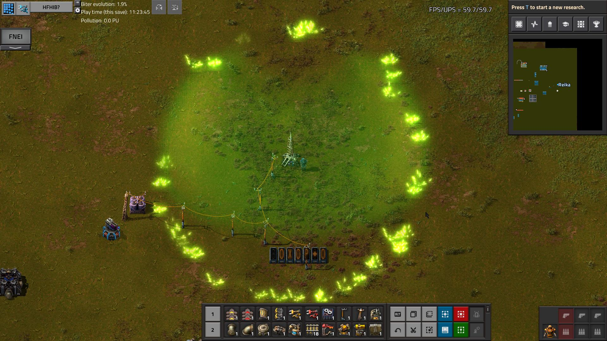

Overview
EndgameCombat greatly expands your defensive and offensive capabilities, geared primarily for defending your factory against biters that have been increased in power due to either mods or high evolution factors as seen in the endgame (hence the name).These capabilities include:
- More variety in turrets, including several types specialized in dealing with certain kinds of attacks (such as against spitters, huge waves of weak enemies, or rare superstrong biters)
- More variety in ammunition for both turrets and manually operated weapons, including that which is designed to bypass resistances, or which can destroy huge clusters of nests
- Shield domes, for preventing any damage to structures in their radius as long as the shield holds, giving more time for turrets to destroy attackers
- Orbital satellite weapon, for destroying huge quantities of spawners anywhere on the map, including automatically
- More wall varieties, including ones which reflect damage
- More capsules, including acid and radiation, which are far more damaging
- More equipment modules, including ones which spray capsule effects or fire, or which are enhanced counterparts to vanilla ones, and better power armor to mount them in
- Technologies to make certain kinds of generally-helpless infrastructure (eg power poles and robots) have self-defence capability
- A radar-type scanner to monitor a huge area at once
- Better versions of standard equipment, including flamethrower and tank, with bonuses to range, damage, power, et cetera
- Research to increase turret attack range, grant self-repair abilities, or add automatic logistics network connection
- Turret monitoring capabilities to warn of low ammo, health, or similar
Turrets
EGCombat adds a number of custom turret types, some of which are basically upgrades to vanilla turrets, some of which are highly specialized against certain attack types, and some of which are intended for special cases or to augment existing defences.The three "basic" turrets are the concussion, acid, and plasma turrets, which are roughly analogous to the gun, flamethrower, and laser turrets in functionality. All three of these boast significantly increased damage, durability, and range relative to their base counterparts (in the case of the acid turret, this is dependent upon which acid is being used as "fuel"; high-tier acids like BobMods nitric are the most damaging).

Plasma turrets in action.
There are also many specialized turrets. These include the shockwave turret, which is designed for use against large waves of weaker enemies, such as might be found with high pollution levels but lower evolution factors, as in the midgame. Though each "hit" from the shockwave turret only does limited damage, they will attack anything in their range, simultaneously, and will increase their rate of fire as the nearby enemy count increases. This gives them an extremely large potential total damage output, and unlike single-target turrets they will not become overwhelmed with even hundreds of biters attacking at once. Even in the later game, these turrets will prove useful, clearing large numbers of weak enemies to allow the other turrets to focus fire on the remaining stronger ones.

A shockwave turret attacking dozens of biters at once, though with only moderate effectivity, as it is not designed for use against large biters.
The lightning turret is basically the opposite extreme - it fires extremely slowly, and has a very short range, but deals enormous damage in this bolt, enough to guarantee a kill of any biter. It will always target the strongest biter in range, meaning that even in a wave with a few superpowerful biters hidden among hundreds of cannon fodder, they can and will select those enemies and rapidly destroy them.
The cannon turret, operated with tank rounds, is designed to pick spitters out of a crowd of biters; with a much slower firing cycle, but large range and high damage - including overpenetration possibility - it will preferentially target spitters, picking them off before they can get in range of the more standard turrets.
The sticky turret does no damage of its own, but sprays the ground with a gluelike substance. This greatly slows enemy movement, and grants the other turrets significantly increased time to destroy incoming enemies before they reach your structures.
The defence trap, aka the last stand turret, is designed for a very special case; it will not fire upon biters at all, but, being a turret, will still be treated as a priority target for them. Once destroyed, it will unleash a massive explosion, wiping out all the enemies in a large radius, along with significant but non-fatal damage to nearby structures. As the alternate name implies, this buys time if all the other defences in an outpost have been overwhelmed, or the ammo/power supply has failed; by the time the next wave arrives to attack that location, you will have had time to restore normal functionality.
Shield Domes
Shield domes provide overarching protection for anything in their radius, disallowing the entry of either biters or projectiles, preventing them from taking damage until the shield is depleted. This allows for turrets inside to attack without danger, and prevents the biters from gradually whittling down turret or walls with successive attacks. Biters will attack the dome itself, and as it takes damage, it will begin to recharge. If the damage input outpaces the recharge rate, the level will continue to drop. Should the shield level reach zero, the shield will fall entirely, allowing the biters to attack as they normally would.A failed shield has a cooldown before it can begin to recharge, at which point it will do so more rapidly compared to an active shield. Once the shield level reaches a specific threshold, it will reactivate and resume the slower active recharge rate. During either recharging phase, the shield dome's power consumption will increase dramatically. Each dome emitter comes with a circuit network connection, indicating current shield level and max capacity.
Shield domes come in three tiers, each with increasing capacity and radius, but slower (and less per-MWh efficient) recharging.
There are a number of technologies to improve shield domes over time, increasing their maximum capacity, their recharging rate (and per-MWh efficiency), their reboot threshold, and more.

A small shield dome.

An outpost protected by three overlapping large shield domes.
Ammunition
EGCombat ammunition falls in two categories. The first is functionally similar to vanilla ammo, but with a different damage profile, usually to bypass typical resistances. This includes incendiary ammunition, which deals fire damage, and supercavitating rounds, which do explosive damage.The second category is far more powerful, usually rocket or cannon type shells. These are designed for mass destruction of nests, and include napalm and neutron bomb varieties. Upon impact, these shells will do immense damage in a large area, and leave a wide field of ongoing damage - flames, radiation, et cetera - that further destroy nests or escaping biters. Unlike the vanilla atomic bomb, these will generally do limited - or in the case of the neutron bomb, no - damage to your own structures or things like cliffs and trees, meaning that you can clear biters without collateral damage.

The leftover fire and radiation from napalm and neutron bomb shells.
Orbital Weaponry
The crown jewel of your defensive technologies will be the orbital defence system, which can rain destruction on any point in the map, with no ammo or (if used in manual mode) power cost. The orbital destroyer can be directed to fire upon any coordinate by the use of a "orbital targeting control" item, placed like an entity. After a short delay, a large blast will destroy any enemy structures near the target. Multiple successive blasts will follow, until there are no more nearby enemy structures.In automatic mode, a device is placed to scan for nests and direct orbital strikes accordingly; this will gradually clear the entire map of nests, though each nest will send every surviving unit it has to attack the scanner.